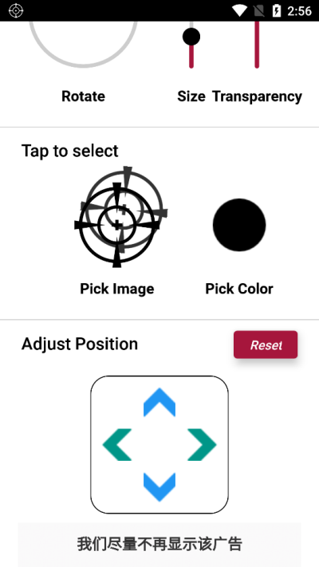

三枪以内把 Crosshair 用上：安卓悬浮准星工具零基础实操
从拿到安装包到在训练场里打出第一发校准弹，手把手走完 Crosshair 准星覆盖工具的完整启用流程，新手不会在权限和校准环节翻车。
这篇教程结束的时候，你能做到：Crosshair 安装好、悬浮准星正常显示、在训练场里把落点校到准星中心，进游戏开第一把不用再临时调参数。
准备：先确认两件事
平台与版本
Crosshair 是安卓端的悬浮准星覆盖工具，目前只支持安卓。应用商店能直接搜到，它的官网上也能找到完整的产品介绍，网盘分发的安装包版本也稳定——网盘的版本更新略滞后一周左右，但差异不大。这篇教程用的是 1.0.22 及以上版本，低于这个版本的话建议先升级，因为 1.0.22 修过界面卡死的问题，低版本可能遇到设置界面滑不动的情况。
前置条件
- 一台安卓手机，系统版本 7.0 以上（Android 8 以下部分机型可能找不到悬浮窗权限开关）；
- 一个 FPS 游戏用于验证——训练场模式最佳，没有训练场就找一个能自由开火的 PVE 关卡；
- 安装包从官方下载入口拿，拿到后记得先转存到自己的网盘再下载，直接下别人的分享链接容易失效。
第一步：安装并给悬浮窗权限
先把安装包装上，再处理唯一的核心权限。
- 在文件管理器里点开下载好的 APK，系统弹「不允许安装未知来源应用」时点「设置」，勾选允许此来源安装，返回再点安装。不同品牌叫法略有差异——有的叫「安装未知应用」，有的叫「未知来源」，都在系统设置的安装权限区。
- 装完桌面出现图标，打开应用。它会立刻弹出「显示在其他应用上层」的权限请求——这是它唯一需要的权限，不给的话准星层出不来，点「允许」就行。安卓 8.0 以上部分机型要手动跳转到系统设置页勾选，跟着它的提示走。

- 权限给到之后，界面中央会出现一个预览准星。别急着进游戏——先把样式挑好、位置对好再切出去，比进了游戏再回来调省事得多。
第二步：挑一个你能看清的准星样式
Crosshair 内置了几十种准星图案，按形状大致分：实心点、十字、断点圆环、狙击镜分划。选的时候别纠结"最优解"——适合你的就两个标准：在地图背景上不丢、开镜后不跟游戏自带分划撞。
打开样式选择区，挨个点一遍预览。如果不确定选什么，断点圆环是万能型——环框感强，中心落点明确，狙击和步枪通吃。狙击枪玩家可以看看狙击镜式图案，圆环和镜内分划重合度高，开镜后叠影不明显。
样式定了之后，把大小调到中等偏上——太小了在手游里费眼，太大了挡住弹道。颜色这块稍微讲究一点：深色地图选亮色（白色/黄色），浅色地图选深色（黑色/红色），两套备用比一套通吃更靠谱。样式之间的详细对比和不同枪种的搭配建议，在Crosshair文档里有完整梳理。

第三步：把准星校到你的枪口上——关键步骤
准星默认出现在屏幕中央附近，但你的枪口轴线未必在那里。这一步是整个教程里最容易被新手跳过、也是跳过之后最难受的步骤。
- 启动准星层，进入游戏训练场。
- 切回 Crosshair 的 Adjust Position 区块，四向箭头盘就在界面右下。
- 按住对应方向的箭头微调：按上准星上移、按下下移、左右同理。每按一次移动一小步，反复点按累积距离。
- 打一发腰射，看弹着点落在哪里——弹着点对准准星中心 = 校准完成。
这里有个先后顺序：先定外观再校位置。图案、大小、角度改了之后，中心点的视觉位置可能微移，位置最后锁最省事。
换了横竖屏、换了不同分辨率的游戏，都要重新校一次；但校准结果在同一类游戏之间基本通用，比如 PUBG 和和平精英同为横屏，校一次就能通吃。
第四步：进游戏用它——不同枪种的用法差异
准星调完直接切游戏。不同枪种的用法略有差别，说三个最常见的场景：
步枪腰射：悬浮准星就是你唯一的瞄准参照。预瞄时把准星套住敌人露头的位置，开火后准星跟着枪口往上跳——如果跳幅太大看不清弹道，回去把透明度调高一点。
狙击不开镜：这是悬浮准星价值最大的场景。狙击腰射状态下屏幕上没有准星，用悬浮准星拉枪找目标，开镜瞬间准星已经贴近，只需要最小修正就打——瞬狙玩家最吃这一套。
狙击开镜后：会跟游戏自带分划叠影。如果两者重合度高，稍微透出一点无伤大雅——把透明度调低就行；如果画面放大导致悬浮准星显得突兀，讲究的做法是开镜瞬间手动点 Stop 停掉、关镜再启动，熟练了就是半秒动作。嫌麻烦就接受叠影，或者只在腰射流程里用它。
新手最容易翻车的三个卡点
卡点一：权限给了但游戏里看不到准星
先确认准星层真的启动了——界面上 Start 按钮按下才生效，光装完应用不够。然后检查系统是不是又把权限回收了，安卓后台管理激进的品牌经常发生这种事。最后排除游戏层面的屏蔽——个别游戏有准星覆盖检测，换个游戏试一下。
卡点二：界面卡死，按钮点了没反应
设置界面滑不动、预览冻结，多半是应用侧的冻结问题。最直接的处理：彻底退出应用（最近任务里划掉）再开；反复出现就重启手机；仍复现就升级到最新版本，1.0.22 的更新记录里明确修过这个问题。
卡点三：换了游戏准星位置对不上
这是正常现象，不是校准失效。不同游戏的枪口轴线位置不一样，第三人称视角的枪口天生不在屏幕中心。解决就是重新走一遍第三步的校准流程——打一发腰射，挪箭头，再打一发，对准了就完事。
往下还能玩什么
准星位置有偏差、想同时跑多套配置、或者想开镜自动隐藏这些进阶功能，都可以继续往下挖。
另外说句题外话——我在GitHub、Gitee、GitCode三个仓库都同步了这套资料，国内网络环境下 Gitee 访问起来通常更顺手，GitHub 那边主要方便交叉参考，GitCode 是最新加的镜像，三份内容保持一致。